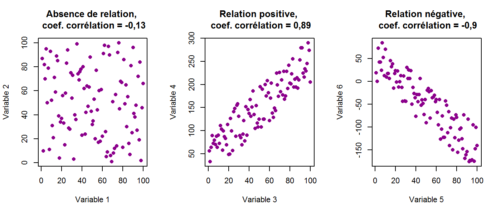

Le but du jeu est simple. essayez de deviner la corrélation entre les deux variables dans un nuage de points. plus votre hypothèse est proche de la vraie corrélation, mieux c est.
Votre estimation devrait être comprise entre -un et un, quand c est 0 il n y a aucune correlation, plus on se rapproche de 1 ou -1 et plus la corrélation est forte
Si vous devinez à moins de 0,05 de la corrélation vraie: Vous gagnez 1 vie et 5 pièces.
Si vous devinez à moins de 0,10 de la vraie corrélation: Vous gagnez 1 pièce.
Si vous devinez à plus de 0,10 de la corrélation vraie: Vous perdez 1 vie.
Vous recevrez également des pièces bonus si vous faites des bonnes suppositions consécutives!
